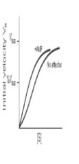

The graph shows the rate of breakdown of skeletal muscle glycogen by phosphorylase in the presence and absence of AMP. Based on the data, which of the following best describes the action of AMP?
Explanation & Educational Objective
Enzymes are kinetically categorized by their Michaelis constant, Km, which inversely reflects their affinity for their substrate, and by Vmax, the maximum catalysis rate of the enzyme In other words, as Kmdecreases, affinity for the substrate increases. Km is defined as the substrate concentration at which the enzyme reaches one-half of its Vmax· In this case, the kinetic analysis of the patient's glycogen phosphorylase shows that the concentration of substrate [SJ at one-half of Vmax decreases in the presence of AMP. Therefore, AMP must increase the affinity of the enzyme for its substrate, a phenomenon that classically results from a conformational change in the active site of the enzyme where substrate binds. Allosteric activators influence enzymes in exactly this manner- inducing conformational change at the active site which in turn increases binding affinity for the substrate. This is reflected by the decreased Km. AMP, a breakdown product of adenosine triphosphate (ATP), is generated in states of fasting. Glycogen, a storage form of glucose in liver and muscle, is broken down by glycogen phosphorylase to liberate free glucose molecules when glucose is depleted in fasting. AMP, when present in excess, signals a state of fasting. It upregulates glycogen degradation through glycogen phosphorylase by acting as an allosteric activator of the enzyme. Incorrect Answers: B, C, D, E, and F. Allosteric inhibitors (Choice B) modify enzymes in a manner that their affinity for their target substrate is reduced at the active site, not increased. Allosteric inhibitors would be reflected in enzyme kinetic analysis by an increase in the Km, indicating that a greater concentration of substrate would be required to elicit the same binding Catabolite activator (Choice C) and catabolite repressor (Choice D) describe phenomena in which transcription of genes is affected; this was first described in the lac operon. When given the option between using glucose or lactose as a substrate, glucose was preferred, and synthesis of enzymes related to lactose metabolism was repressed. By contrast, in an absence of glucose, synthesis of lactose-metabolizing enzymes was promoted. Covalent modifier of the enzyme (Choice E) and covalent modifier of phosphorylase kinase (Choice F) suggest modification of the enzyme by phosphorylation or dephosphorylation. Covalent modification can affect conformation at the active site, however, AMP is not acting as a phosphate donor or recipient in this case; it binds directly to induce conformalional change.
Allosteric activators influence enzymes by inducing conformational change at the active site, which increases binding affinity for the substrate. This is reflected by a decreased Km AMP, a breakdown product of adenosine triphosphate, is generated in states of fasting and thus upregulates glycogen phosphorylase to liberate stored glucose and supply the cells with a substrate for glycolysis when none is nutritionally available.